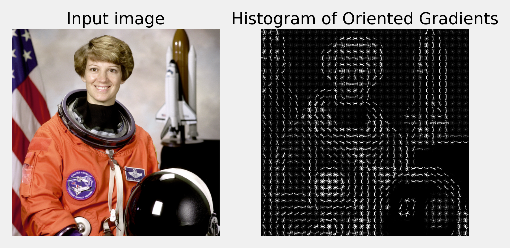

Content
- HOG features
- Visual Words
- Spatial Pyramid
- PCA and LDA
- Evaluation
Image Classification
Passing a whole image to a classifier.
Image Classification Strategies
Extracting low level features from an image.
Low Level Features
Two low level features, which are used often, include SIFT and HOG features, combined with some colour descriptors.
SIFT - Scale Invariant Feature Transform
- Localised feature based on image gradients.
- One of the first of its kind.
- Some proprietary aspects to its use.
- covered in a later lecture.
HOG - histograms of oriented gradients.
- Also a gradient based feature.
- next up!
Histograms of Oriented Gradients
- Image is divided into regions - a window.
- Each window is further divided into cells.
- Each cell is typically 6 to 8 pixels wide.
Histograms of Oriented Gradients
A local 1D histogram of gradient directions.
- 1D dimension is the angle of the gradient
- the angle is quantised into a discrete set of bins
- for example, for a bin size 20 degrees, we have 18 bins
- sum of all elements is equal to number of pixels in the cell
Angle
- A gradient is calculated using a centred \([-1,0,1]\) filter.
- The filter is applied vertically and horizontally.
- We derive the gradient direction from these first derivatives.
\[\alpha = \tan^{-1} \frac{\delta g}{\delta y}~ / ~ \frac{\delta g}{\delta x}\]
Magnitude
For colour images, we can calculate gradient for the three channels and select the one with the largest magnitude.
\[|G| = \sqrt{\left(\frac{\delta g}{\delta x}\right)^2 + \left(\frac{\delta g}{\delta y}\right)^2} \]
Binning
For each pixel within a cell, its gradient orientation is used to increment the relevant histogram bin.
- in proportion to the gradient magnitude
Interpolation
To enforce invariance to some small gradient orientation differences, we interpolate histogram contributions between the neighbouring bin centres.
- Typical binning - 20 degrees.
Contrast Normalisation
We choose a certain configuration of cells and call it a block
- typically 2-3 cell wide
- perform normalisation within each block
- various schemes proposed in original paper
- e.g. modified L2 norm \(v \rightarrow v / \sqrt{||v||^2_2 + \epsilon^2}\)
HOG example
Dalal and Triggs. “Histograms of Oriented Gradients for Human Detection”, CVPR, 2005
Visual Words
Once the features are extracted, we would often use dictionaries of visual words.
Visual Words
Features representing scenes should be able to summarise these scenes.
Visual Words
Imagine we would like to classify images containing sets of objects.
Visual Words
The precise location of objects may not be relevant.
- The objects may move or deform within the image.
- The viewpoint may change or the image may be deformed or scaled.
Visual Words
This suggests some kind of high level histogram representation of the scene.
- How many cups or plates visible in a kitchen scene?
- Will these objects be present in an outdoor scene?
- How many trees might you expect in a kitchen?
Visual Words
Detect interest points in the image.
- e.g. corners, T-junctions etc.
- build neighbourhoods around them.
Visual Words
Describe these neighbourhoods with low level features.
For example, SIFT
Visual Words
Vector-quantise these features.
- e.g. by k-means clustering.
- These clusters are very much like words.
Visual Words
For each image, build a histogram of these visual words.
- Two similar images should have similar histograms.
Visual Words
Compare histograms using histogram intersection.
\[HI = \sum_{i=1}^{n} \min(h_i, g_i)\]
- Sivic and Zisserman, “Efficient Visual Search…”, Proc. IEEE 2008.
Classifier Evaluation
How do we evaluate the performance of the classifier?
Classifier Evaluation
Image Classification is often evaluated using two metrics:
Classifier Evaluation
Precision : the percentage of recovered items that are relevant.
\[TP / (TP + FP)\]
Classifier Evaluation
Recall : the percentage of relevant items that are recovered.
\[TP / (TP + FN)\]
Classifier Evaluation
We also calculate average precision:
\[A = \frac{1}{N_r} \sum_{r=1}^{N}P(r)rel(r)\]
Average precision is the area under the Precision-Recall curve.
Classifier Evaluation
We also calculate average precision:
\[A = \frac{1}{N_r} \sum_{r=1}^{N}P(r)rel(r)\]
- \(N_r\) is the number of relevant items
- \(N\) is the total number of items
- \(P(r)\) is the precision of first \(r\) items in the ranked list.
- \(rel(r)\) a binary function that is 1 when the \(r^{th}\) document is relevant.
 precision-recall for two models
precision-recall for two models
Classifier Evaluation
ROC curves should be used when there are roughly equal numbers of observations for each class.
Precision-Recall curves should be used when there is a moderate to large class imbalance.